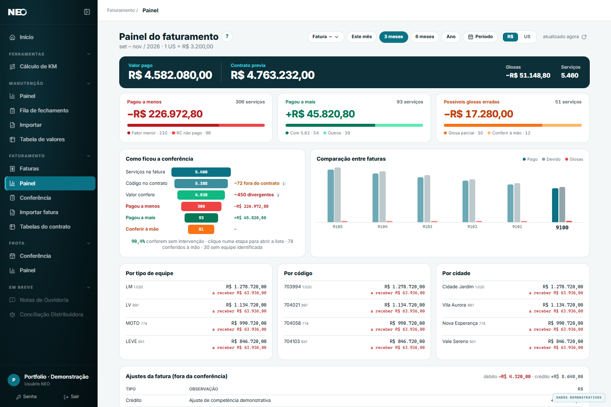
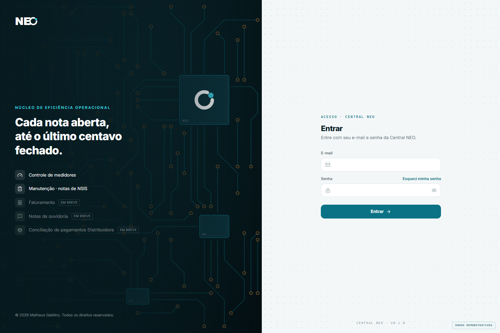

O contrato como dado
Regras e fatores vivem em estruturas explícitas, com histórico dos acertos e motivo das alterações.
Entender a operação.
Desenhar a experiência.
Construir o sistema inteiro.
A Central NEO reúne fechamento de serviços, conferência de pagamentos e disponibilidade de equipes em uma aplicação web com identidade própria.
Cada planilha guardava uma parte da operação.
Um arquivo para acompanhar notas. Outro para conferir pagamentos. Uma grade com macros para controlar a frota. O trabalho exigia cruzar dados e interpretar regras que mudavam conforme o serviço.
O desafio era transformar essa lógica em um produto que mantivesse o detalhe técnico e tornasse a rotina mais clara.
Arquivos separados.
Regras distribuídas pelo processo.
Conectar o que foi executado,
o que foi cobrado e o que foi pago.
Uma fila por etapas transforma o acompanhamento de notas em uma sequência visível de ações, com fluxos próprios para NSIS e NSRI.
Familiar para quem opera.Filtros por coluna e exportação preservam a lógica de trabalho de quem vem do Excel.
Histórico preservado.O fluxo novo convive com os registros antigos sem reescrever o processo anterior.
Estado compartilhável.Busca, lista e filtros ficam na URL, facilitando retomar uma visão específica.
O sistema cruza os arquivos da fatura, preserva a origem dos dados e aplica as regras do contrato para apoiar a conferência por serviço.
A diferença fica visível para quem confere, junto dos dados que sustentam o cálculo.
Regras e fatores vivem em estruturas explícitas, com histórico dos acertos e motivo das alterações.
A conferência destaca situações que exigem análise. A decisão permanece com quem conhece a operação.
Quando os dados relevantes mudam, a conferência anterior deixa de valer para o novo cálculo.
Valores desta demonstração são fictícios. O exemplo ilustra a leitura da diferença, sem reproduzir o cálculo de um contrato real.
Um painel organiza pagamentos, diferenças e situações de conferência. Os cartões conduzem às listas filtradas para continuar a análise.

Visão geral com contexto.O resumo reúne valores e quantidades, com filtros por período e fatura.
Uma cor, um significado.Diferenças e situações da conferência mantêm a mesma leitura entre painel e lista.
O resumo é o começo.O clique leva ao recorte que precisa de atenção, em vez de encerrar a análise no gráfico.
Uma grade de dias e equipes substitui o controle por macro. Cores semânticas, motivos e histórico organizam a conferência da disponibilidade.
A cor traduz a regra.Estados, ocorrências e pendências têm uma linguagem visual consistente.
Interação pensada para a grade.O destaque de linha e coluna atualiza o DOM sem redesenhar toda a tela a cada movimento.
Detalhe quando faz falta.Visões de dia e mês, histórico da frota e exportação apoiam a mesma rotina.
Uma SPA em React conectada ao Supabase. A interface organiza a ação; funções TypeScript tratam o domínio; o Postgres aplica regras, calcula e protege os dados.
Leitura e validação
de arquivos
React 19 · TypeScript · React Router · Tailwind
PostgreSQL · Auth · Views · RPCs · RLS
Administração de
acessos e integração
Permissão além do botão.
O banco confere o módulo autorizado para a operação.
Domínio fora do componente.
Leitura de arquivos e regras podem ser verificadas sem React.
Integração com fronteira própria.
O módulo legado de medidores mantém cliente e sessão separados.
A qualidade do produto também está no que acontece depois do clique: consistência, rastreabilidade e limites claros entre responsabilidades.
O lançamento guarda o fator usado naquele momento. O ajuste da tabela tem histórico e motivo; o registro anterior conserva seu contexto.
Views e RPCs no Postgres concentram o cálculo e os filtros. Resultados guardados são atualizados quando os dados relevantes mudam.
O cálculo de quilômetros lê os relatórios localmente e trata pontos falsos de GPS com regras algorítmicas. O arquivo não precisa ir a um servidor.
Auth identifica a sessão, o acesso por módulo organiza as permissões e políticas no banco verificam as operações sobre os dados.
neo_nsis → neo_nsis_itens → neo_vw_nsisO serviço é a raiz. Os itens guardam as cobranças. A view apresenta o estágio calculado do fechamento.
Sessão → Acesso por módulo → RLS / RPCA checagem na interface orienta a experiência. A validação no banco protege a operação.
PDF → pdf.js → coordenadas → limpeza → quilômetrosLeitura, tratamento e cálculo acontecem no navegador, com resumo e exportação para auditoria.
Uma nota aberta. Um ponto que completa o ciclo. A marca conecta a identidade visual à finalidade do sistema: acompanhar até o fechamento.
Clareza para uma interface com muitos dados.
0123456789
JetBrains MonoIdentificadores com leitura consistente.
Petróleo para ação. Noite para a estrutura. Ciano para o ponto que fecha o círculo. A apresentação segue a mesma identidade do aplicativo. Ver a identidade na tela de entrada 
O desenvolvimento conecta modelagem, interface e verificação. Cada camada precisa sustentar o que o produto permite fazer.
TypeScript em modo estrito e compilação de produção para verificar a integração do front-end.
Playwright com API simulada para conferir fluxos sem alterar dados operacionais.
Scripts de verificação de regras e testes transacionais com reversão para mudanças de banco.
Aplicação preparada para hospedagem estática na Vercel, com documentação das decisões e das pendências.
Capacidade de transformar uma rotina de negócio em uma aplicação web, articulando experiência, domínio, segurança e dados.
Desenvolvimento full stack.
Da pergunta certa ao produto que funciona.